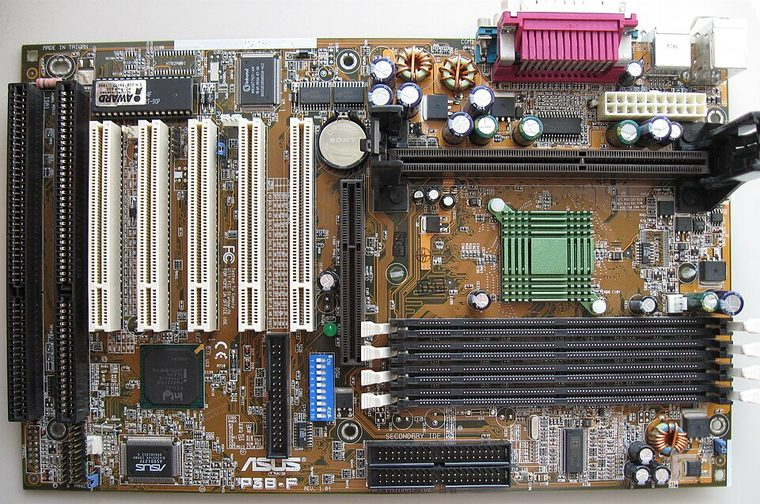

[ INDIVIDUAL COMPONENT // MOTHERBOARDS ]
ASUS P3B-F (Revision 1.04)
Slot 1 / Intel 440BX, 1999. This entry documents one exact board model/revision; its specifications are not interchangeable with similarly named variants.

REVISION WARNING: Confirm the PCB silk-screen, assembly/AA code and firmware ID on the actual board. Where documentation does not identify one PCB spin, this record states the exact documented model and explains the revision distinction below.
Specifications
| Exact model / revision | P3B-F PCB revision 1.04 |
|---|---|
| CPU / socket | Slot 1 Pentium II/III and Celeron support is BIOS and CPU stepping specific; check ASUS CPU support list |
| Chipset / platform | Intel 82443BX northbridge + 82371EB PIIX4E southbridge |
| Memory | Four 168-pin SDRAM DIMM slots; capacity and PC100/PC133 DIMM density rules from manual |
| Form factor | ATX |
| I/O and expansion | AGP 2x, five PCI and two ISA; IDE, floppy, serial/parallel, USB and PS/2 |
| Firmware compatibility | Award BIOS; revision-specific CPU voltage/BIOS support, BIOS recovery behavior and FSB settings |
Compatibility and revision pitfalls
P3B-F is distinct from P3B and P3B-1394. A board revision and BIOS version must be read directly from the PCB/POST; CPU support lists commonly state a minimum BIOS and stepping. DIMM density can limit usable RAM even when a module fits.
Socket fit alone is not proof of support. Confirm the manufacturer CPU support list, the board's minimum BIOS, memory population table, and exact chassis/power requirements before operation.
Preservation notes
Record the revision, BIOS string, clock-jumper positions and DIMM arrangement. Inspect socket/slot retention, caps, battery corrosion and onboard clock/battery areas; back up a working BIOS image before experimentation.
Record provenance, date/serial codes, board and firmware revision, known repairs and test conditions. Photograph labels and connectors before cleaning or component removal; retain original firmware and configuration data when possible.
Sources & further reading
- ASUS P3B-F support — manual downloadsManufacturer documents for the exact P3B-F model; use board-revision-specific manual and processor list.
- ASUS P3B-F support — BIOS and CPU compatibility filesOfficial model download archive; verify required BIOS before installing a later CPU.
Manufacturer manuals, CPU lists and archived primary documents take precedence over reseller summaries. If an archived support page omits a revision-specific file, do not assume another revision's firmware is compatible.